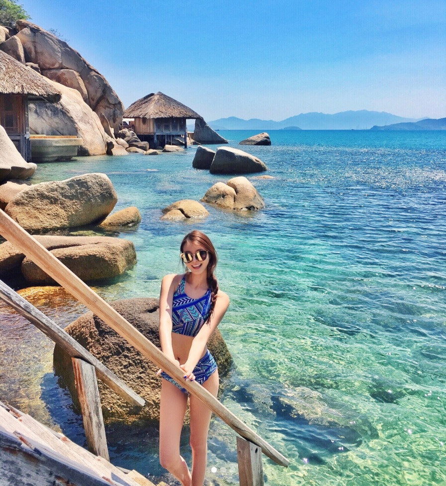

Hòn đảo du lịch tuyệt đẹp hình một chú tằm nằm giữa biển khơi là một địa điểm đang rất thu hút với du khách. Ở đảo hòn tằm có những khu resort khách sạn cao cấp, những hoạt động trên biển hấp dẫn, cùng những trải nghiệm nghỉ dưỡng, spa ấn tượng. Đây thực sự là một thiên đường nghỉ dưỡng nhiệt đới ở Việt Nam mà bạn luôn kiếm tìm.
Hòn Tằm có nhiều khu nghỉ dưỡng cao cấp, cùng những hoạt động hấp dẫn trên biển thu hút mọi du khách tới tham quan
Bãi biển Nha Trang
Bãi biển ở trung tâm thành phố Nha Trang rất nổi tiếng, nằm trong top những bãi biển đẹp nhất thế giới. Nước biển trong xanh cùng bờ cát trắng mịn trải dài đến 7 km, khiến khung cảnh thiên nhiên trở nên bát ngát, là địa điểm lý tưởng để tham gia vui chơi các hoạt động trên biển, cũng như ngắm hoàng hôn và bình minh.
Bãi biển Nha Trang là một trong những bãi biển đẹp nhất hành tinh
Tháp Bà Ponagar
Đây là một quần thể di tích cổ của người Chăm Pa còn bảo tồn gần như nguyên vẹn, gồm 4 tòa tháp, 2 miếu thờ, trong đó tháp lớn nhất là tháp thờ nữ thần Ponagar. Tới đây tham quan bạn có thể kết hợp tắm bùn tại Khu du lịch suối khoáng nóng gần đó, với giá vé 100.000 đồng/người cho những bể tắm chung.
Tháp bà Ponagar là khu di tích cổ của người Chăm Pa được xây dưng từ khoảng thế kỷ thứ 8 đến 13


Một số điểm du lịch khác
Nha Trang rất nỗi tiếng với nhiều tour du lịch biển đảo:
Vinpearland Nha Trang
Du lịch Nha Trang - Cao Nguyên Da Lat
Du Lịch Nha Trang - Cao Nguyên Ban Mê
Du Lịch Nha Trang - Tour 4 Đảo